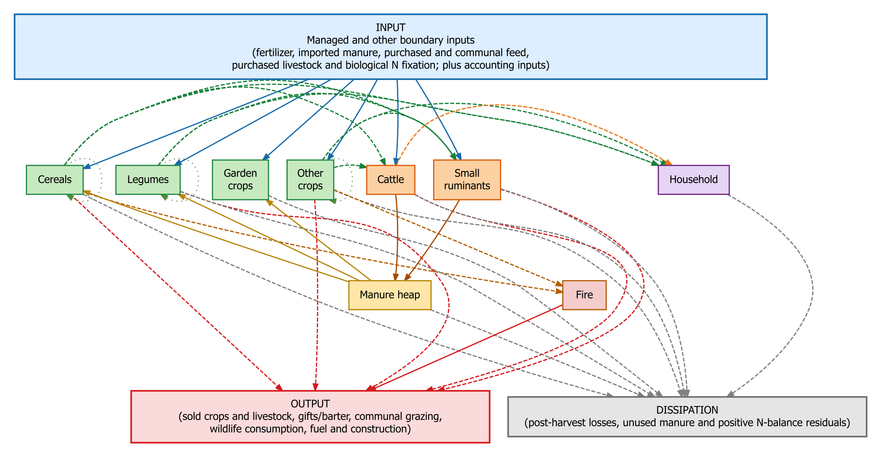
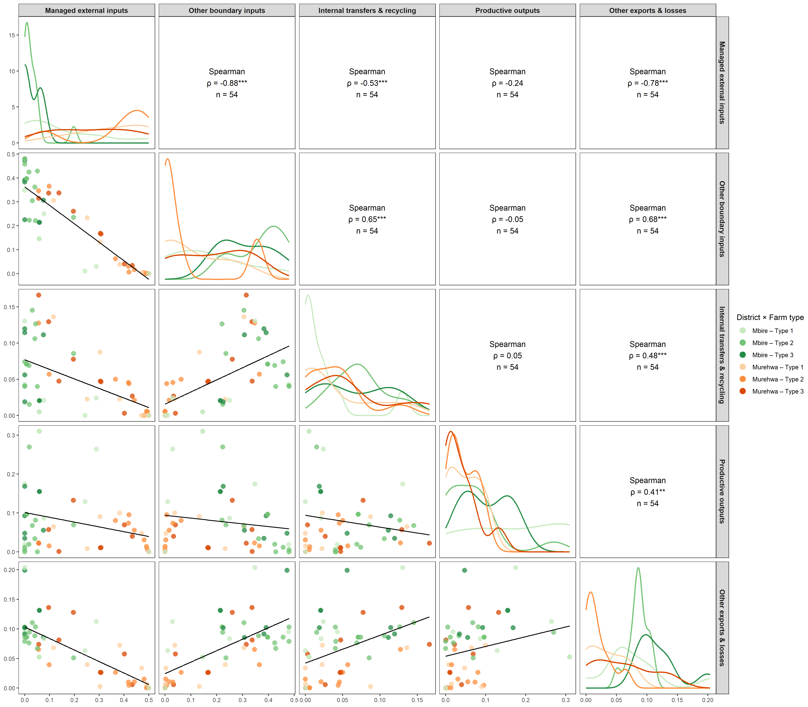
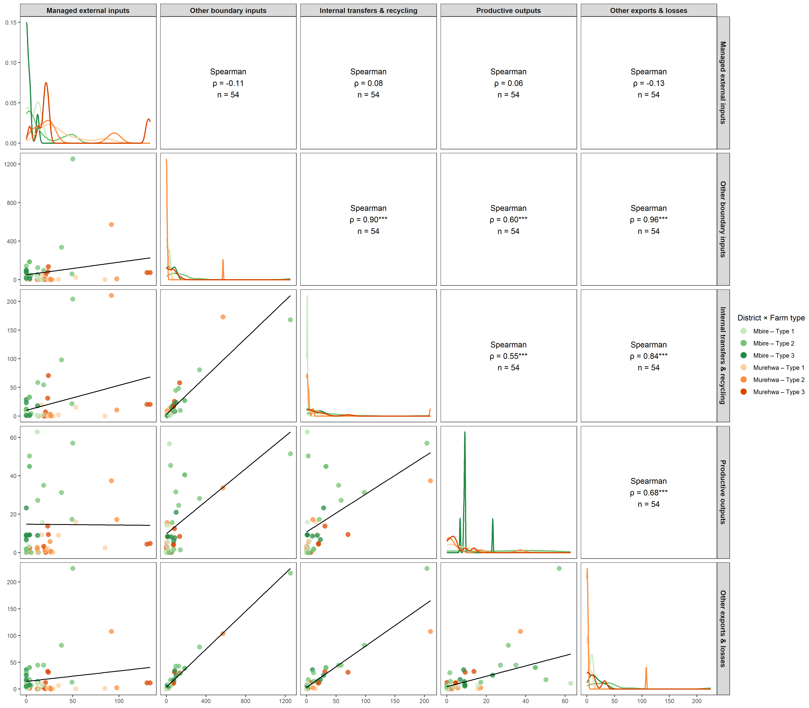

Chapter 8 Ecological Network Analysis
This chapter uses ecological network analysis to characterize nitrogen flows and assess the functioning of diverse farming systems at the farm level.
8.1 Introduction
Ecological Network Analysis (ENA) provides a framework to examine how nutrients circulate within farming systems. Farms with similar nutrient inputs or nutrient-use efficiency may nevertheless differ substantially in how nutrient flows are distributed among compartments and internal pathways, and in the extent to which nutrients are recycled and retained within the system. ENA allows these differences to be examined by representing the farm as a network of compartments (nodes) connected by directed, quantified flows, and analysing the properties that emerge from their joint organization (Rufino et al. 2009; Ulanowicz et al. 2009).
Applied to mixed crop–livestock systems, ENA thus provides a way to move beyond the analysis of individual practices or nutrient-use efficiency towards an assessment of the functioning of the farming system as a whole
This chapter presents an ENA of annual nitrogen flows at farm level (kg N per farm per year) to analyse the functioning of diverse farming systems in two districts of Zimbabwe (Mbire and Murehwa). The workflow combines farm-level nitrogen accounting, network analysis and comparisons across districts and farm types.
Nitrogen is the currency used to quantify flows. The network comprises nine internal compartments representing crop, livestock, manure-management and household components of the farming system, and three additional boundary terms representing inputs entering the farm system, outputs leaving it, and dissipation. This representation allows us to characterize not only the magnitude of nitrogen flows, but also the cycling, integration and organization of the farm network.
The diagram below summarizes the internal compartments, the system boundary and the main pathways considered in the analysis. It is a conceptual representation of the flow structure, the quantitative network is built separately for each farm.

Figure 8.1: Conceptual representation of farms for the Ecological Network Analysis
The nine internal compartments are as follows:
| Compartment | Role in the network | Important interpretation |
|---|---|---|
| Cereals | Aggregated cereal production | Crop-specific details are aggregated into the cereal group. |
| Legumes | Aggregated legume production | Retains the functional distinction between legumes and other crop groups. |
| Garden crops | Garden-crop production | A production category, not a separate system boundary. |
| Other crops | Other crop production | Crops not assigned to cereals, legumes or garden crops. |
| Cattle | Cattle production and associated feed, manure and product flows | Kept separate from small ruminants to preserve pathway differences. |
| Small ruminants | Small-ruminant production and associated feed, manure and product flows | Kept separate from cattle. |
| Household | Household use and transfers | Household consumption is an internal transfer to this node, not automatically an export. |
| Manure heap | Manure collection, storage and processing | Manure passes through this internal node before being returned to crop compartments. |
| Fire | Burning-related process represented in the current network | Kept as a distinct node to represent the burning pathway in the farm N network. |
The three boundary terms are as follows:
- Input: nitrogen entering the farm system from managed and other external sources, together with explicitly identified accounting inputs.
- Output: nitrogen leaving the farm through recorded productive or other output pathways.
- Dissipation: nitrogen leaving internal compartments through recorded losses and residual dissipation added during accounting closure.
The analysis has two complementary components. First, network indicators characterize the amount and organization of nitrogen moving through the farm system, including total system throughflow, path length, cycling and network overhead. Second, a functional flow budget groups flows according to their role in the farm system: managed external inputs, other boundary inputs, internal transfers and recycling, productive outputs, and other exports and losses. These functional categories are used to compare farms and explore associations with farm type and district.
The analysis follows three steps:
- Balance farm nitrogen accounts. Recorded flows are assembled for each farm and internal compartment. Residual imbalances are identified and represented using explicit accounting adjustments, while keeping these adjustments distinct from measured flows.
- Run the ecological network analysis. A network is constructed for each farm, and indicators are calculated to describe nitrogen throughput, resource dependency, cycling and network structure. A complementary functional budget classifies flows according to their role in the farming system.
- Compare districts and farm types. Farm-level indicators and functional flow budgets are summarized and explored across the six district × farm-type groups.
The example uses data from Murehwa and Mbire districts in Zimbabwe (farm_ena_flows_raw.xlsx), which can be downloaded here: https://github.com/FBaudron/book_standardized_workflows/blob/main/08-ecological_network_analysis/farm_ena_flows_raw.xlsx.
A standalone R script containing the workflow is available here: https://github.com/FBaudron/book_standardized_workflows/blob/main/08-ecological_network_analysis/ecological_network_analysis.R.
We first load the necessary packages.
if (!require("tidyverse")) install.packages("tidyverse")
if (!require("readxl")) install.packages("readxl")
if (!require("enaR")) install.packages("enaR")
if (!require("GGally")) install.packages("GGally")
if (!require("ggplot2")) install.packages("ggplot2")
if (!require("scales")) install.packages("scales")
if (!require("gtsummary")) install.packages("gtsummary")
library(tidyverse)
library(readxl)
library(enaR)
library(GGally)
library(ggplot2)
library(scales)
library(gtsummary)8.2 Preparing and balancing farm nitrogen accounts
8.2.1 Preparing the data
Load the survey-derived data from the following worksheets:
- farm_flows: farm-level directed flow records, including source, destination, nitrogen and dry matter quantities, and flow classification fields.
- ena_nodes: the names of the nine internal compartments.
- crop_production: crop-group area and production information used to calculate crop productivity indicators.
- ENA_to_Typology: links each ENA farm identifier to its district and farm type. It is an independent metadata input needed to stratify the pair plots; it is not an intermediate output of the ENA calculations.
farm_flows = read_xlsx("Data\\farm_ena_flows_raw.xlsx", sheet = "farm_flows") %>%
mutate(farm_id = as.character(farm_id), source = as.character(source), destination = as.character(destination),
N_kg = as.numeric(N_kg), DM_kg = as.numeric(DM_kg))
ena_nodes = read_xlsx("Data\\farm_ena_flows_raw.xlsx", sheet = "ena_nodes") %>%
pull(node) %>%
as.character()
crop_production = read_xlsx("Data\\farm_ena_flows_raw.xlsx", sheet = "crop_production") %>%
mutate(farm_id = as.character(farm_id))We separate internal transfers, boundary inputs, outputs and recorded dissipation. Nitrogen inflows and outflows are then summed for each farm × node. Existing survey-derived dissipation, including post-harvest losses and unused manure, is included before residuals are calculated, avoiding double counting.
internal_flows = farm_flows %>%
filter(source %in% ena_nodes, destination %in% ena_nodes)
input_flows = farm_flows %>%
filter(source == "Input", destination %in% ena_nodes)
output_flows = farm_flows %>%
filter(source %in% ena_nodes, destination == "Output")
dissipation_flows = farm_flows %>%
filter(source %in% ena_nodes, destination == "Dissipation")We then calculate the raw nitrogen balance for each farm × node. Recorded dissipation is included before any additional residual dissipation is calculated.
node_balance_N = bind_rows(input_flows %>%
group_by(farm_id, node = destination) %>%
summarise(input_N = sum(N_kg, na.rm = TRUE), .groups = "drop"), internal_flows %>%
group_by(farm_id, node = destination) %>%
summarise(internal_in_N = sum(N_kg, na.rm = TRUE), .groups = "drop"), internal_flows %>%
group_by(farm_id, node = source) %>%
summarise(internal_out_N = sum(N_kg, na.rm = TRUE), .groups = "drop"), output_flows %>%
group_by(farm_id, node = source) %>%
summarise(output_N = sum(N_kg, na.rm = TRUE), .groups = "drop"), dissipation_flows %>%
group_by(farm_id, node = source) %>%
summarise(dissipation_N = sum(N_kg, na.rm = TRUE), .groups = "drop")) %>%
group_by(farm_id, node) %>%
summarise(input_N = sum(input_N, na.rm = TRUE), internal_in_N = sum(internal_in_N,
na.rm = TRUE), internal_out_N = sum(internal_out_N, na.rm = TRUE), output_N = sum(output_N,
na.rm = TRUE), dissipation_N = sum(dissipation_N, na.rm = TRUE), .groups = "drop") %>%
right_join(tidyr::expand_grid(farm_id = sort(unique(farm_flows$farm_id)), node = ena_nodes),
by = c("farm_id", "node")) %>%
mutate(across(c(input_N, internal_in_N, internal_out_N, output_N, dissipation_N),
~replace_na(.x, 0)), balance_before_closure_N = input_N + internal_in_N -
internal_out_N - output_N - dissipation_N) %>%
arrange(farm_id, match(node, ena_nodes))8.2.2 Balancing farm nitrogen accounts
The accounting closure is applied to each farm × compartment after all recorded inputs, internal transfers, outputs and dissipation have been included. A positive residual means that recorded inflows exceed recorded outflows; it is assigned to dissipation so that the compartment balance closes. A negative residual means that recorded outflows exceed recorded inflows and therefore requires a different interpretation. Crop deficits are represented by an Input → crop soil_N_input accounting flow, which makes the balance close but must not be interpreted as a measured soil-N flux. Livestock deficits are retained as livestock_N_balance_adjustment rather than being presented as genuine external inputs. Negative residuals in other compartments are not assigned an assumed pathway. Positive livestock residuals are labelled separately because they may include biomass retention as well as unmeasured losses.
Crop deficits are represented as unmeasured soil-N inputs. This is an accounting term, not a measured soil-N flux.
soil_N_input_flows = node_balance_N %>%
filter(node %in% c("Cereals", "Legumes", "Garden_crops", "Other_crops"), balance_before_closure_N <
-1e-10) %>%
transmute(farm_id, source = "Input", destination = node, product = "soil_N",
DM_kg = NA_real_, N_kg = -balance_before_closure_N, flow_type = "soil_N_input",
mechanism = "unaccounted_soil_N")Negative residual in a livestock compartment is represented as a separate accounting adjustment, not as a measured external input. It may reflect unmeasured livestock N drawdown, omitted animal products or uncertainty in feed/manure/body-composition assumptions. It is excluded from both real-input indicators below.
livestock_balance_input_flows = node_balance_N %>%
filter(node %in% c("Cattle", "Small_ruminants"), balance_before_closure_N < -1e-10) %>%
transmute(farm_id, source = "Input", destination = node, product = "livestock_N_balance_adjustment",
DM_kg = NA_real_, N_kg = -balance_before_closure_N, flow_type = "livestock_N_balance_adjustment",
mechanism = "unmeasured_livestock_N_drawdown_or_missing_flow")Positive residuals are closed with an output to the Dissipation boundary. For livestock nodes, this is explicitly an unallocated residual: because birth weights and opening/closing herd biomass are unavailable, it may include animal biomass retention as well as unmeasured losses. It must not be interpreted as a measured physiological or environmental loss.
n_dissipation_flows = node_balance_N %>%
filter(balance_before_closure_N > 1e-10) %>%
transmute(farm_id, source = node, destination = "Dissipation", product = if_else(node %in%
c("Cattle", "Small_ruminants"), "livestock_N_balance_residual", "unaccounted_N"),
DM_kg = NA_real_, N_kg = balance_before_closure_N, flow_type = if_else(node %in%
c("Cattle", "Small_ruminants"), "livestock_N_balance_residual", "N_dissipation"),
mechanism = if_else(node %in% c("Cattle", "Small_ruminants"), "unallocated_livestock_N_possible_stock_retention_or_missing_loss",
"positive_node_balance"))
accounting_adjustments = bind_rows(n_dissipation_flows, soil_N_input_flows, livestock_balance_input_flows)
farm_flows_final = bind_rows(farm_flows, accounting_adjustments) %>%
mutate(farm_id = as.character(farm_id), N_kg = as.numeric(N_kg))8.3 Running the ecological network analysis
8.3.1 Constructing farm-level networks
The following function builds an network for one farm, using the R package enaR (Lau et al. (2026)). It creates a square internal-flow matrix (source rows, destination columns), fills absent links with zero, and constructs vectors for inputs, exports and dissipation. The dissipation vector is passed to the function pack() as respiration: this is the package argument name and does not imply that all dissipation is biological respiration.
build_farm_network = function(farm_id_value, flows, nodes) {
farm_data = flows %>%
filter(farm_id == as.character(farm_id_value))
# Internal flow matrix: rows are source compartments and columns are
# destination compartments.
internal_matrix = farm_data %>%
filter(source %in% nodes, destination %in% nodes) %>%
group_by(source, destination) %>%
summarise(N_kg = sum(N_kg, na.rm = TRUE), .groups = "drop") %>%
tidyr::complete(source = nodes, destination = nodes, fill = list(N_kg = 0)) %>%
tidyr::pivot_wider(names_from = destination, values_from = N_kg, values_fill = 0) %>%
tibble::column_to_rownames("source") %>%
as.matrix()
internal_matrix = internal_matrix[nodes, nodes, drop = FALSE]
# External N inputs: Input -> each internal compartment.
input_vector = farm_data %>%
filter(source == "Input", destination %in% nodes) %>%
group_by(destination) %>%
summarise(N_kg = sum(N_kg, na.rm = TRUE), .groups = "drop") %>%
right_join(tibble(node = nodes), by = c(destination = "node")) %>%
mutate(N_kg = replace_na(N_kg, 0)) %>%
tibble::deframe()
input_vector = input_vector[nodes]
names(input_vector) = nodes
# Exports: each internal compartment -> Output.
export_vector = farm_data %>%
filter(source %in% nodes, destination == "Output") %>%
group_by(source) %>%
summarise(N_kg = sum(N_kg, na.rm = TRUE), .groups = "drop") %>%
right_join(tibble(node = nodes), by = c(source = "node")) %>%
mutate(N_kg = replace_na(N_kg, 0)) %>%
tibble::deframe()
export_vector = export_vector[nodes]
names(export_vector) = nodes
# Dissipation: each internal compartment -> Dissipation.
respiration_vector = farm_data %>%
filter(source %in% nodes, destination == "Dissipation") %>%
group_by(source) %>%
summarise(N_kg = sum(N_kg, na.rm = TRUE), .groups = "drop") %>%
right_join(tibble(node = nodes), by = c(source = "node")) %>%
mutate(N_kg = replace_na(N_kg, 0)) %>%
tibble::deframe()
respiration_vector = respiration_vector[nodes]
names(respiration_vector) = nodes
# Construct the enaR network object.
enaR::pack(flow = internal_matrix, input = input_vector, respiration = respiration_vector,
export = export_vector)
}The following loop builds one network per farm and calculates the network and functional indicators used below.
extract_ena_stat = function(result, statistic) {
if (is.null(result))
return(NA_real_)
stats = if (is.list(result) && "ns" %in% names(result))
result$ns else result
if (is.matrix(stats) || is.data.frame(stats)) {
if (is.null(colnames(stats)) || !statistic %in% colnames(stats))
return(NA_real_)
value = stats[1, statistic]
} else if (!is.null(names(stats)) && statistic %in% names(stats)) {
value = stats[[statistic]]
} else {
return(NA_real_)
}
value = suppressWarnings(as.numeric(value))
if (length(value) != 1)
NA_real_ else value
}farm_ids = sort(unique(as.character(farm_flows_final$farm_id)))
indicator_rows = vector("list", length(farm_ids))
managed_flow_types = c("mineral_fertilizer", "external_manure", "purchased_feed",
"livestock_input")
other_boundary_flow_types = c("communal_feed", "communal_manure_return", "biological_N_fixation")
accounting_flow_types = c("soil_N_input", "livestock_N_balance_adjustment", "livestock_N_balance_residual",
"N_dissipation")8.3.2 Classifying nitrogen flows
Before calculating the throughput components and functional budgets, each flow is assigned an input class and a mutually exclusive functional role. The input classes distinguish managed external inputs, other boundary inputs and accounting adjustments. Accounting adjustments are retained explicitly and are not interpreted as measured external resources.
The functional classification distinguishes the role of a flow from its position in the network. For example, a transfer to the Household node remains an internal link in the ENA network but is classified as a productive output in the functional budget. Crop harvest delivered to the household, crop sales, crop gifts/barter, livestock sales and milk output are classified as productive outputs. Milk is assigned to Household because the survey does not distinguish household consumption from milk sales. Gifts/barter remain part of the broad productive-output category.
Flows that do not match these rules are retained as unclassified. They are not included in the five substantive functional categories and should be reviewed before interpreting the functional comparison.
farm_flows_final = farm_flows_final %>%
mutate(input_class = case_when(flow_type %in% managed_flow_types ~ "managed_external_input",
flow_type %in% other_boundary_flow_types ~ "other_boundary_input", flow_type %in%
accounting_flow_types ~ "accounting_adjustment", TRUE ~ NA_character_),
functional_role = case_when(flow_type %in% accounting_flow_types ~ "accounting_adjustment",
flow_type %in% managed_flow_types ~ "managed_external_input", flow_type %in%
other_boundary_flow_types ~ "other_boundary_input", flow_type %in%
c("harvest_consumption", "harvest_sale", "harvest_gift", "livestock_sale",
"livestock_output") ~ "productive_output", flow_type == "residue_burnt" ~
"other_exports_and_losses", source %in% ena_nodes & destination %in%
ena_nodes ~ "internal_transfer_recycling", destination %in% c("Output",
"Dissipation") ~ "other_exports_and_losses", TRUE ~ "unclassified"),
product_group = case_when(flow_type %in% c("harvest_consumption", "harvest_sale",
"harvest_gift") ~ source, flow_type == "livestock_output" ~ "Milk", flow_type ==
"livestock_sale" ~ paste0(source, "_livestock"), TRUE ~ NA_character_),
production_pathway = case_when(flow_type == "harvest_consumption" ~ "household_consumption",
flow_type == "harvest_sale" ~ "market_sale", flow_type == "harvest_gift" ~
"gift_or_barter", flow_type == "livestock_output" ~ "household_milk",
flow_type == "livestock_sale" ~ "market_sale", TRUE ~ NA_character_))8.3.3 Calculating TST and farm-level ENA indicators
The first calculation extracts total system throughflow (TST), defined as the sum of throughflows across all internal compartments, and decomposes it into managed external inputs, other boundary inputs, accounting inputs and transfers between internal compartments. Boundary exports and dissipation are outflows and are not added again as inputs to this decomposition.
The farm-level ENA indicators are then calculated from the network constructed for each farm. The analysis also extracts total system throughput (TSTp) from enaR::enaFlow(), where the subscript p denotes throughput. Unlike TST, which sums flows through internal compartments, TSTp represents the sum of all flows in the network, including internal flows, external inputs and external outputs. We use TSTp as the denominator for the complementary functional flow budget, which groups flows according to their role in the farming system.
tst_decomposition = farm_flows_final %>%
filter((source == "Input" & destination %in% ena_nodes) | (source %in% ena_nodes &
destination %in% ena_nodes)) %>%
mutate(tst_component = case_when(input_class == "managed_external_input" ~ "managed_external_inputs",
input_class == "other_boundary_input" ~ "other_boundary_inputs", input_class ==
"accounting_adjustment" ~ "accounting_inputs", source %in% ena_nodes &
destination %in% ena_nodes ~ "internal_flows", TRUE ~ "unclassified")) %>%
group_by(farm_id, tst_component) %>%
summarise(N_kg = sum(N_kg, na.rm = TRUE), .groups = "drop")The functional TSTp budget provides a complementary perspective by grouping flows according to their role in the farming system. It distinguishes five substantive categories: managed external inputs, other boundary inputs, internal transfers and recycling, productive outputs, and other exports and losses. Accounting adjustments are retained as a sixth, separate category.
The five substantive categories are used in the pair plots. Accounting adjustments are not displayed as a sixth plotted category, but remain in the TSTp denominator. Consequently, the five plotted shares are not expected to sum to 100%; they are expressed relative to the full TSTp and are not renormalized to the five displayed categories. Category 5 includes exports and losses that are not food production, including useful non-food biomass destinations such as fuel and construction residues where recorded.
tstp_budget = farm_flows_final %>%
mutate(tstp_component = case_when(functional_role == "managed_external_input" ~
"1_managed_external_inputs", functional_role == "other_boundary_input" ~
"2_other_boundary_inputs", functional_role == "internal_transfer_recycling" ~
"3_internal_transfers_recycling", functional_role == "productive_output" ~
"4_productive_outputs", functional_role == "other_exports_and_losses" ~ "5_other_exports_and_losses",
functional_role == "accounting_adjustment" ~ "6_accounting_adjustments",
TRUE ~ "7_unclassified")) %>%
group_by(farm_id, tstp_component) %>%
summarise(N_kg = sum(N_kg, na.rm = TRUE), .groups = "drop")8.3.4 Summarising production and detailed flow pathways
The functional categories provide an overview, while the following tables retain more detailed information on the origin and mechanism of boundary inputs, the identity of exports and losses, and productive pathways. Fuel and construction residues remain in the other-export/loss category in the supplied classification, although these may be useful biomass destinations rather than biophysical losses.
input_flow_breakdown = farm_flows_final %>%
filter(source == "Input", destination %in% ena_nodes) %>%
group_by(farm_id, input_class, flow_type, mechanism, destination) %>%
summarise(DM_kg = sum(DM_kg, na.rm = TRUE), N_kg = sum(N_kg, na.rm = TRUE), .groups = "drop")
other_exports_losses_detail = farm_flows_final %>%
filter(functional_role == "other_exports_and_losses") %>%
group_by(farm_id, flow_type, mechanism, source, destination, product) %>%
summarise(DM_kg = sum(DM_kg, na.rm = TRUE), N_kg = sum(N_kg, na.rm = TRUE), .groups = "drop")The production summaries retain productive pathways by product group and destination. Crop flows are summarized in kg dry matter and kg N; milk is summarized in litres; livestock sales are summarized in kg liveweight where recorded. The household-and-market table excludes gifts/barter, whereas the broader productive-output category includes them.
farm_production_indicators = farm_flows_final %>%
filter(functional_role == "productive_output") %>%
group_by(farm_id, product_group, production_pathway, source, destination) %>%
summarise(DM_kg = sum(DM_kg, na.rm = TRUE), N_kg = sum(N_kg, na.rm = TRUE), milk_L = if (any(product_group ==
"Milk")) {
sum(product_quantity, na.rm = TRUE)
} else {
NA_real_
}, liveweight_sold_kg = if (any(flow_type == "livestock_sale")) {
sum(LW_kg, na.rm = TRUE)
} else {
NA_real_
}, .groups = "drop")Productive outputs delivered to the household or market. This comparison excludes gifts/barter, which remain part of the broader productive-output category in the five-part TSTp functional budget. Milk is included as a household output because the survey does not record whether it is consumed or sold; this limitation is documented above.
household_market_pathways = c("household_consumption", "household_milk", "market_sale")
farm_household_market_outputs = farm_flows_final %>%
filter(functional_role == "productive_output", production_pathway %in% household_market_pathways) %>%
group_by(farm_id, product_group, production_pathway) %>%
summarise(DM_kg = sum(DM_kg, na.rm = TRUE), N_kg = sum(N_kg, na.rm = TRUE), .groups = "drop")
farm_household_market_output_totals = farm_household_market_outputs %>%
group_by(farm_id) %>%
summarise(household_market_output_DM_kg = sum(DM_kg, na.rm = TRUE), household_market_output_N_kg = sum(N_kg,
na.rm = TRUE), .groups = "drop") %>%
right_join(tibble(farm_id = sort(unique(farm_flows_final$farm_id))), by = "farm_id") %>%
mutate(across(c(household_market_output_DM_kg, household_market_output_N_kg),
~replace_na(.x, 0)))Crop productivity is calculated by crop group. Harvest dry matter and nitrogen are divided by cropped area to obtain kg DM ha⁻¹ and kg N ha⁻¹. These are crop-group averages at farm level, not plot-level yields. The input workbook also retains household allocation, marketed production, gifts/barter, wildlife consumption, post-harvest losses and unallocated intercrop production. These are descriptive production-accounting variables, not additional ENA nodes.
farm_crop_productivity = crop_production %>%
group_by(farm_id, crop_group) %>%
summarise(cropped_area_ha = sum(area_ha, na.rm = TRUE), harvest_DM_kg = sum(harvest_DM_kg,
na.rm = TRUE), harvest_N_kg = sum(harvest_N_kg, na.rm = TRUE), household_DM_kg = sum(household_DM_kg,
na.rm = TRUE), household_N_kg = sum(household_N_kg, na.rm = TRUE), marketed_DM_kg = sum(marketed_DM_kg,
na.rm = TRUE), marketed_N_kg = sum(marketed_N_kg, na.rm = TRUE), gift_barter_DM_kg = sum(gift_barter_DM_kg,
na.rm = TRUE), wildlife_DM_kg = sum(wildlife_DM_kg, na.rm = TRUE), postharvest_loss_DM_kg = sum(postharvest_loss_DM_kg,
na.rm = TRUE), intercrop_DM_unallocated_kg = sum(intercrop_DM_unallocated_kg,
na.rm = TRUE), .groups = "drop") %>%
mutate(harvest_DM_kg_ha = if_else(cropped_area_ha > 0, harvest_DM_kg/cropped_area_ha,
NA_real_), harvest_N_kg_ha = if_else(cropped_area_ha > 0, harvest_N_kg/cropped_area_ha,
NA_real_))The network-based indicators are calculated for each farm using its ENA network. They include TST and TSTp, average path length (APL), the Finn Cycling Index (FCI), overhead/capacity, effective link density and structural indicators of network integration and connectivity. The loop is retained because the network object and ENA statistics are farm-specific. The same loop also combines these network indicators with the farm-level TST decomposition and functional flow summaries.
invisible(capture.output({
for (i in seq_along(farm_ids)) {
id = farm_ids[i]
network = build_farm_network(id, farm_flows_final, ena_nodes)
# Accounting adjustments are applied before network construction.
# Override enaR's internal test for inactive 0-in/0-out nodes.
flow_results = enaR::enaFlow(network, balance.override = TRUE)
asc_results = enaR::enaAscendency(network)
structure_results = enaR::enaStructure(network)
tst = if (!is.null(flow_results) && "TST" %in% colnames(flow_results$ns)) {
as.numeric(flow_results$ns[1, "TST"])
} else {
NA_real_
}
tstp = if (!is.null(flow_results) && "TSTp" %in% colnames(flow_results$ns)) {
as.numeric(flow_results$ns[1, "TSTp"])
} else {
NA_real_
}
farm_budget = tst_decomposition %>% filter(farm_id == id)
managed_input_N = sum(farm_budget$N_kg[farm_budget$tst_component == "managed_external_inputs"], na.rm = TRUE)
other_boundary_input_N = sum(farm_budget$N_kg[farm_budget$tst_component == "other_boundary_inputs"], na.rm = TRUE)
accounting_input_N = sum(farm_budget$N_kg[farm_budget$tst_component == "accounting_inputs"], na.rm = TRUE)
internal_flow_N = sum(farm_budget$N_kg[farm_budget$tst_component == "internal_flows"], na.rm = TRUE)
farm_tstp_budget = tstp_budget %>% filter(farm_id == id)
# Recycling is the functional internal-transfer category only. Household
# consumption and household milk are excluded because they are productive
# outputs, even though these transfers remain internal links in the enaR
# network. Market sales are also productive outputs at the farm boundary.
internal_recycling_N = sum(
farm_tstp_budget$N_kg[
farm_tstp_budget$tstp_component == "3_internal_transfers_recycling"],
na.rm = TRUE
)
household_market_output_N = farm_household_market_output_totals$household_market_output_N_kg[
match(id, farm_household_market_output_totals$farm_id)
]
if (length(household_market_output_N) == 0 || is.na(household_market_output_N)) {
household_market_output_N = 0
}
productive_output_N = sum(farm_tstp_budget$N_kg[farm_tstp_budget$tstp_component == "4_productive_outputs"], na.rm = TRUE)
other_exports_losses_N = sum(farm_tstp_budget$N_kg[farm_tstp_budget$tstp_component == "5_other_exports_and_losses"], na.rm = TRUE)
accounting_adjustment_N = sum(farm_tstp_budget$N_kg[farm_tstp_budget$tstp_component == "6_accounting_adjustments"], na.rm = TRUE)
APL = extract_ena_stat(flow_results, "APL")
FCI = extract_ena_stat(flow_results, "FCI")
OH_CAP = extract_ena_stat(asc_results, "OH.CAP")
ELD = extract_ena_stat(asc_results, "ELD")
OH_internal = extract_ena_stat(asc_results, "OH.internal")
CAP_internal = extract_ena_stat(asc_results, "CAP.internal")
pscc = extract_ena_stat(structure_results, "pscc")
no_scc_big = extract_ena_stat(structure_results, "no.scc.big")
connectance_C = extract_ena_stat(structure_results, "C")
RDC = if (is.finite(OH_internal) && is.finite(CAP_internal) && CAP_internal > 0) {
OH_internal / CAP_internal
} else {
NA_real_
}
indicator_rows[[i]] = tibble(
farm_id = id,
TST_kgN = tst,
TSTp_kgN = tstp,
managed_external_input_kgN = managed_input_N,
managed_external_input_over_TST = ifelse(is.finite(tst) & tst > 0, managed_input_N / tst, NA_real_),
other_boundary_input_kgN = other_boundary_input_N,
other_boundary_input_over_TST = ifelse(is.finite(tst) & tst > 0, other_boundary_input_N / tst, NA_real_),
accounting_input_kgN = accounting_input_N,
accounting_input_over_TST = ifelse(is.finite(tst) & tst > 0, accounting_input_N / tst, NA_real_),
# All internal network transfers, including transfers to Household that
# are functionally classified as productive outputs.
all_internal_flows_kgN = internal_flow_N,
all_internal_flows_over_TST = ifelse(is.finite(tst) & tst > 0, internal_flow_N / tst, NA_real_),
# Mutually exclusive functional indicators for the recycling/output plot.
internal_recycling_kgN = internal_recycling_N,
internal_recycling_over_TSTp = ifelse(is.finite(tstp) & tstp > 0, internal_recycling_N / tstp, NA_real_),
household_market_outputs_kgN = household_market_output_N,
household_market_outputs_over_TSTp = ifelse(is.finite(tstp) & tstp > 0, household_market_output_N / tstp, NA_real_),
# Broader productive-output category in the five-part budget also includes
# gifts/barter; use household_market_outputs_* for the specific plot.
productive_outputs_kgN = productive_output_N,
productive_outputs_over_TSTp = ifelse(is.finite(tstp) & tstp > 0, productive_output_N / tstp, NA_real_),
other_exports_and_losses_kgN = other_exports_losses_N,
other_exports_and_losses_over_TSTp = ifelse(is.finite(tstp) & tstp > 0, other_exports_losses_N / tstp, NA_real_),
accounting_adjustments_kgN = accounting_adjustment_N,
accounting_adjustments_over_TSTp = ifelse(is.finite(tstp) & tstp > 0, accounting_adjustment_N / tstp, NA_real_),
APL = APL,
FCI = FCI,
pscc = pscc,
pscc_percent = 100 * pscc,
no_scc_big = no_scc_big,
RDC = RDC,
OH_CAP = OH_CAP,
ELD = ELD,
connectance_C = connectance_C
)
}
farm_ena_indicators = bind_rows(indicator_rows) %>% arrange(farm_id)
}))8.3.5 Interpreting ENA indicators
All networks are expressed in annual nitrogen flows (kg N/year). The indicators below are mostly dimensionless ratios or indices. They characterize different aspects of farm-level network organization, dependency, cycling and redundancy.
Dependency on external inputs:
| Indicator | Formula | Role in the network | Important interpretation |
|---|---|---|---|
| Managed input dependency | Managed external N inputs / TST | Proportion of total system throughflow originating from managed external resources, including mineral fertilizer, purchased feed, imported manure and purchased livestock. | Higher values indicate greater dependence on purchased or deliberately imported resources. |
| Other boundary input contribution | Other boundary N inputs / TST | Proportion of TST originating from other external biological and landscape-derived resources, including biological nitrogen fixation, communal grazing and communal manure returned to the farm. | Represents the contribution of resources originating outside the farm but not classified as managed purchases. |
| Average Path Length (APL) | TST / Boundary | Average number of compartments through which nitrogen passes between entering and leaving the network. | Higher values indicate greater internal processing and circulation relative to boundary flows. APL is the reciprocal of Boundary Flow Intensity (BFI); they should not be interpreted as independent indicators. |
Nutrient cycling:
| Indicator | Formula | Role in the network | Important interpretation |
|---|---|---|---|
| Finn Cycling Index (FCI) | Cycling throughput / TST | Proportion of total system throughput involved in cycling. It captures nitrogen that passes through the network and returns to a compartment it has previously visited before eventually leaving the system. | Higher values indicate a greater contribution of cycling to total system throughput. Crop-to-same-crop flows (residue retention and incorporation) can contribute to FCI. It should therefore be interpreted as a broad network cycling indicator, not exclusively as crop-livestock-manure recycling. |
| Percentage of nodes in non-trivial strongly connected components (pscc) | Number of nodes in multi-node strongly connected components / Total number of nodes | Proportion of network compartments belonging to strongly connected components containing more than one compartment. Within such a component, every compartment can be reached from every other compartment through directed pathways. | Measures the extent of multi-compartment integration and feedback in the network. An isolated compartment or a self-loop (e.g. Cereals → Cereals) does not constitute a multi-node strongly connected component. A value of zero therefore does not mean that there is no nutrient cycling. |
Redundancy and flexibility:
| Indicator | Formula | Role in the network | Important interpretation |
|---|---|---|---|
| Relative internal redundancy (RDC) | OH.internal / CAP.internal | Ratio of internal overhead to internal development capacity. It focuses specifically on internal exchanges, excluding external inputs and exports from the denominator. | ENA-derived proxy for the relative overhead or reserve associated with internal flow organization. Higher values may indicate greater potential for alternative internal pathways and flexibility. RDC is a derived indicator, not a directly measured level of redundancy or a direct resilience measurement. |
| OH.CAP (Overhead / Capacity) | OH / CAP | Proportion of total network development capacity represented by overhead rather than ascendency. It includes overhead associated with inputs, internal exchanges, exports and dissipation. | Indicates the potential reserve and flexibility of the overall network. It is broader than RDC and should be retained as a separate indicator. It is not a direct measure of resilience. |
| Effective Link Density (ELD) | — | Flow-based measure of the effective number of links or parallel pathways in the network, accounting for the distribution of flows between compartments. | Characterizes the effective density and multiplicity of pathways through which nitrogen circulates. |
Supplementary structural indicators:
These supplementary indicators describe network topology, rather than the magnitude of nitrogen flows.
The proportion of nodes in non-trivial strongly connected components (pscc) and the number of such components (no.scc.big) are retained as complementary structural indicators. The first describes how much of the network is involved in multi-node feedback components; the second describes how many distinct components of this kind occur.
| Indicator | Formula | Role in the network | Important interpretation |
|---|---|---|---|
| Connectance (C) | Number of observed directed links / Number of possible directed links | Proportion of possible connections between compartments that are present in the network. | Measures the structural connectedness of the network. Higher values indicate a greater proportion of possible directed connections between compartments. |
8.3.6 Expressing flow components relative to TST and TSTp
To compare farms of different sizes, each component of the TST decomposition is expressed as a proportion of that farm’s TST, while each functional budget category is expressed as a proportion of that farm’s TSTp. These are farm-level shares, not percentages recalculated from group totals. Accounting adjustments remain in the TSTp denominator even though they are not among the five substantive categories displayed in the pair plots. A zero or missing denominator produces NA rather than an undefined ratio.
tst_decomposition = tst_decomposition %>%
left_join(farm_ena_indicators %>%
select(farm_id, TST_kgN), by = "farm_id") %>%
mutate(share_of_TST = if_else(TST_kgN > 0, N_kg/TST_kgN, NA_real_))
tstp_budget = tstp_budget %>%
left_join(farm_ena_indicators %>%
select(farm_id, TSTp_kgN), by = "farm_id") %>%
mutate(share_of_TSTp = if_else(TSTp_kgN > 0, N_kg/TSTp_kgN, NA_real_))8.4 Comparing districts and farm types
This step brings together the farm-level ENA results and the functional flow budgets. District and farm types derived from (Baudron et al. 2026) are used to organize descriptive comparisons across the six groups (Mbire and Murehwa, each with Types 1–3).
budget = tstp_budget %>%
mutate(farm_id = as.character(farm_id), tstp_component = as.character(tstp_component),
N_kg = as.numeric(N_kg), share_of_TSTp = as.numeric(share_of_TSTp))We define the functional categories (mutually exclusive) for comparison. Productive outputs include household consumption, market sales, and gifts/barter.
components = c("1_managed_external_inputs", "2_other_boundary_inputs", "3_internal_transfers_recycling",
"4_productive_outputs", "5_other_exports_and_losses")
component_labels = c("Managed external inputs", "Other boundary inputs", "Internal transfers & recycling",
"Productive outputs", "Other exports & losses")District and farm type are linked to ENA farm identifiers using the ENA_to_Typology worksheet. The factor levels below set a consistent order for the six district × farm-type groups.
farm_metadata = read_excel("Data\\farm_ena_flows_raw.xlsx", sheet = "ENA_to_Typology") %>%
transmute(farm_id = as.character(ENA_farm_ID), District = stringr::str_trim(as.character(District)),
Farm_type = stringr::str_trim(as.character(Farm_type)))
farm_metadata = farm_metadata %>%
mutate(Farm_type = factor(Farm_type, levels = c("Type 1", "Type 2", "Type 3")),
District = factor(District, levels = c("Mbire", "Murehwa")))
district_type_levels = c("Mbire – Type 1", "Mbire – Type 2", "Mbire – Type 3",
"Murehwa – Type 1", "Murehwa – Type 2", "Murehwa – Type 3")
farm_metadata = farm_metadata %>%
mutate(District_Type = factor(paste(as.character(District), as.character(Farm_type),
sep = " – "), levels = district_type_levels))We build the absolute-flow dataset (kg N farm⁻¹ year⁻¹). The five functional categories are reshaped to one row per farm and one column per category, retaining kg N per farm per year. The typology metadata are joined to the flow values. These absolute values reflect both farm scale and the allocation of throughput among functions.
absolute_long = budget %>%
filter(tstp_component %in% components) %>%
group_by(farm_id, tstp_component) %>%
summarise(N_kg = sum(N_kg, na.rm = TRUE), .groups = "drop") %>%
tidyr::complete(farm_id = farm_ids, tstp_component = components, fill = list(N_kg = 0))
data_absolute = absolute_long %>%
pivot_wider(names_from = tstp_component, values_from = N_kg, values_fill = 0) %>%
select(farm_id, all_of(components)) %>%
rename_with(~component_labels, all_of(components)) %>%
left_join(farm_metadata, by = "farm_id") %>%
select(farm_id, District, Farm_type, District_Type, all_of(component_labels))The relative-flow dataset (proportion of TSTp) contains the same five categories, expressed as shares of TSTp. Accounting adjustments are not displayed as a sixth plotted variable but remain in the TSTp denominator. The five proportions can therefore sum to less than one; they are not renormalized to the five plotted categories.
relative_long = budget %>%
filter(tstp_component %in% components) %>%
group_by(farm_id, tstp_component) %>%
summarise(share_of_TSTp = sum(share_of_TSTp, na.rm = TRUE), .groups = "drop") %>%
tidyr::complete(farm_id = farm_ids, tstp_component = components, fill = list(share_of_TSTp = 0))
data_percent = relative_long %>%
pivot_wider(names_from = tstp_component, values_from = share_of_TSTp, values_fill = 0) %>%
select(farm_id, all_of(components)) %>%
rename_with(~component_labels, all_of(components)) %>%
left_join(farm_metadata, by = "farm_id") %>%
select(farm_id, District, Farm_type, District_Type, all_of(component_labels))We create a farm-level indicator dataset and summarize all calculated ENA indicators by district × farm type. The table reports medians and interquartile ranges (25th–75th percentiles), which describe the central tendency and spread without assuming normally distributed farm-level values. The group headings report the number of farms contributing to each summary. Absolute throughput and flow quantities are reported in kg N farm⁻¹ year⁻¹; dependency and flow-allocation indicators are proportions; the remaining indicators are dimensionless network indices. The table is descriptive and does not test for statistically significant differences between groups.
ena_summary_data = farm_ena_indicators %>%
left_join(farm_metadata %>%
select(farm_id, District_Type), by = "farm_id") %>%
select(District_Type, TST_kgN, TSTp_kgN, managed_external_input_kgN, managed_external_input_over_TST,
other_boundary_input_kgN, other_boundary_input_over_TST, accounting_input_kgN,
accounting_input_over_TST, all_internal_flows_kgN, all_internal_flows_over_TST,
internal_recycling_kgN, internal_recycling_over_TSTp, household_market_outputs_kgN,
household_market_outputs_over_TSTp, productive_outputs_kgN, productive_outputs_over_TSTp,
other_exports_and_losses_kgN, other_exports_and_losses_over_TSTp, accounting_adjustments_kgN,
accounting_adjustments_over_TSTp, APL, FCI, pscc_percent, no_scc_big, RDC,
OH_CAP, ELD, connectance_C)
gtsummary::tbl_summary(ena_summary_data, by = District_Type, include = -District_Type,
type = list(pscc_percent ~ "continuous", all_continuous() ~ "continuous"), statistic = all_continuous() ~
"{median} ({p25}, {p75})", digits = all_continuous() ~ 2, missing = "no",
label = list(TST_kgN ~ "Total system throughput (kg N farm⁻¹ yr⁻¹)", TSTp_kgN ~
"Total system throughput, TSTp (kg N farm⁻¹ yr⁻¹)", managed_external_input_kgN ~
"Managed external inputs (kg N farm⁻¹ yr⁻¹)", managed_external_input_over_TST ~
"Managed input dependency (proportion of TST)", other_boundary_input_kgN ~
"Other boundary inputs (kg N farm⁻¹ yr⁻¹)", other_boundary_input_over_TST ~
"Other boundary input contribution (proportion of TST)", accounting_input_kgN ~
"Accounting inputs (kg N farm⁻¹ yr⁻¹)", accounting_input_over_TST ~
"Accounting inputs (proportion of TST)", all_internal_flows_kgN ~ "All internal flows (kg N farm⁻¹ yr⁻¹)",
all_internal_flows_over_TST ~ "All internal flows (proportion of TST)", internal_recycling_kgN ~
"Functional internal transfers/recycling (kg N farm⁻¹ yr⁻¹)", internal_recycling_over_TSTp ~
"Functional internal transfers/recycling (proportion of TSTp)", household_market_outputs_kgN ~
"Household and market outputs (kg N farm⁻¹ yr⁻¹)", household_market_outputs_over_TSTp ~
"Household and market outputs (proportion of TSTp)", productive_outputs_kgN ~
"All productive outputs, including gifts/barter (kg N farm⁻¹ yr⁻¹)",
productive_outputs_over_TSTp ~ "All productive outputs (proportion of TSTp)",
other_exports_and_losses_kgN ~ "Other exports and losses (kg N farm⁻¹ yr⁻¹)",
other_exports_and_losses_over_TSTp ~ "Other exports and losses (proportion of TSTp)",
accounting_adjustments_kgN ~ "Accounting adjustments (kg N farm⁻¹ yr⁻¹)",
accounting_adjustments_over_TSTp ~ "Accounting adjustments (proportion of TSTp)",
APL ~ "Average path length (APL)", FCI ~ "Finn cycling index (FCI)", pscc_percent ~
"Nodes in non-trivial strongly connected components (%)", no_scc_big ~
"Number of non-trivial strongly connected components", RDC ~ "Relative internal redundancy (RDC)",
OH_CAP ~ "Overhead / capacity (OH.CAP)", ELD ~ "Effective link density (ELD)",
connectance_C ~ "Network connectance (C)")) %>%
gtsummary::add_overall(last = TRUE) %>%
gtsummary::modify_header(label = "**ENA indicator**") %>%
gtsummary::modify_caption("**Farm-level ENA indicators by district × farm type**") %>%
gtsummary::bold_labels()| ENA indicator | Mbire – Type 1 N = 91 |
Mbire – Type 2 N = 131 |
Mbire – Type 3 N = 71 |
Murehwa – Type 1 N = 71 |
Murehwa – Type 2 N = 91 |
Murehwa – Type 3 N = 91 |
Overall N = 541 |
|---|---|---|---|---|---|---|---|
| Total system throughput (kg N farm⁻¹ yr⁻¹) | 37.28 (19.93, 119.80) | 230.89 (105.44, 252.39) | 93.04 (34.24, 109.57) | 49.79 (28.75, 87.81) | 27.02 (18.00, 40.25) | 78.69 (25.26, 225.09) | 80.76 (26.62, 138.39) |
| Total system throughput, TSTp (kg N farm⁻¹ yr⁻¹) | 59.83 (35.26, 202.77) | 402.95 (186.29, 465.72) | 162.32 (59.33, 195.28) | 90.67 (57.50, 173.00) | 53.47 (33.59, 70.37) | 150.16 (47.32, 424.08) | 146.67 (51.15, 250.59) |
| Managed external inputs (kg N farm⁻¹ yr⁻¹) | 11.80 (1.20, 11.80) | 3.50 (3.50, 18.75) | 0.00 (0.00, 3.50) | 28.75 (19.92, 53.35) | 25.75 (12.13, 26.55) | 20.75 (19.00, 23.90) | 12.80 (3.50, 25.75) |
| Managed input dependency (proportion of TST) | 0.10 (0.10, 0.43) | 0.03 (0.01, 0.07) | 0.00 (0.00, 0.10) | 0.70 (0.49, 0.97) | 0.76 (0.64, 0.93) | 0.58 (0.26, 0.75) | 0.15 (0.03, 0.70) |
| Other boundary inputs (kg N farm⁻¹ yr⁻¹) | 12.26 (1.75, 29.51) | 122.91 (58.96, 184.94) | 49.84 (12.70, 85.09) | 3.40 (0.19, 23.26) | 0.44 (0.13, 7.06) | 50.65 (1.89, 71.81) | 27.02 (1.89, 76.18) |
| Other boundary input contribution (proportion of TST) | 0.25 (0.05, 0.45) | 0.73 (0.53, 0.82) | 0.54 (0.37, 0.70) | 0.07 (0.00, 0.45) | 0.03 (0.01, 0.11) | 0.32 (0.07, 0.54) | 0.39 (0.06, 0.65) |
| Accounting inputs (kg N farm⁻¹ yr⁻¹) | 3.54 (0.90, 41.66) | 24.89 (0.77, 35.74) | 8.90 (7.24, 10.95) | 0.00 (0.00, 0.00) | 0.00 (0.00, 0.10) | 0.00 (0.00, 0.07) | 0.43 (0.00, 12.94) |
| Accounting inputs (proportion of TST) | 0.22 (0.09, 0.35) | 0.07 (0.01, 0.10) | 0.10 (0.08, 0.26) | 0.00 (0.00, 0.00) | 0.00 (0.00, 0.01) | 0.00 (0.00, 0.00) | 0.01 (0.00, 0.10) |
| All internal flows (kg N farm⁻¹ yr⁻¹) | 4.60 (3.57, 36.84) | 39.05 (12.75, 58.82) | 10.09 (9.14, 23.86) | 2.61 (2.41, 22.46) | 2.42 (1.30, 10.13) | 7.22 (3.15, 23.40) | 10.11 (2.61, 28.79) |
| All internal flows (proportion of TST) | 0.23 (0.19, 0.31) | 0.15 (0.14, 0.21) | 0.26 (0.21, 0.27) | 0.10 (0.03, 0.23) | 0.14 (0.06, 0.24) | 0.12 (0.10, 0.16) | 0.17 (0.10, 0.25) |
| Functional internal transfers/recycling (kg N farm⁻¹ yr⁻¹) | 1.02 (0.82, 1.45) | 33.00 (11.85, 54.45) | 10.09 (1.22, 23.37) | 1.78 (0.00, 15.36) | 1.25 (0.32, 3.53) | 7.12 (1.26, 20.26) | 3.18 (1.02, 20.26) |
| Functional internal transfers/recycling (proportion of TSTp) | 0.01 (0.01, 0.02) | 0.07 (0.04, 0.09) | 0.06 (0.02, 0.11) | 0.02 (0.00, 0.09) | 0.04 (0.01, 0.05) | 0.05 (0.03, 0.08) | 0.04 (0.02, 0.08) |
| Household and market outputs (kg N farm⁻¹ yr⁻¹) | 6.16 (1.54, 62.84) | 31.26 (1.92, 44.91) | 9.19 (8.56, 9.19) | 2.55 (0.64, 9.25) | 1.45 (0.70, 5.67) | 3.07 (1.89, 4.73) | 6.45 (1.54, 16.31) |
| Household and market outputs (proportion of TSTp) | 0.17 (0.09, 0.31) | 0.05 (0.01, 0.10) | 0.09 (0.05, 0.15) | 0.05 (0.01, 0.09) | 0.03 (0.02, 0.07) | 0.02 (0.01, 0.06) | 0.05 (0.01, 0.10) |
| All productive outputs, including gifts/barter (kg N farm⁻¹ yr⁻¹) | 6.16 (1.54, 62.84) | 31.26 (1.92, 44.91) | 9.19 (8.56, 9.19) | 2.55 (0.64, 9.25) | 1.52 (0.70, 5.67) | 3.27 (1.89, 4.73) | 6.45 (1.54, 17.29) |
| All productive outputs (proportion of TSTp) | 0.17 (0.09, 0.31) | 0.07 (0.01, 0.10) | 0.09 (0.05, 0.15) | 0.05 (0.01, 0.09) | 0.03 (0.02, 0.07) | 0.02 (0.01, 0.06) | 0.06 (0.01, 0.10) |
| Other exports and losses (kg N farm⁻¹ yr⁻¹) | 7.18 (3.24, 10.62) | 40.06 (14.32, 44.49) | 13.87 (7.79, 25.74) | 1.63 (0.48, 6.56) | 0.65 (0.14, 1.87) | 11.38 (2.42, 12.21) | 7.79 (1.63, 17.85) |
| Other exports and losses (proportion of TSTp) | 0.06 (0.05, 0.10) | 0.09 (0.08, 0.09) | 0.10 (0.09, 0.13) | 0.03 (0.00, 0.07) | 0.01 (0.00, 0.03) | 0.06 (0.03, 0.08) | 0.07 (0.03, 0.09) |
| Accounting adjustments (kg N farm⁻¹ yr⁻¹) | 18.70 (13.48, 86.98) | 137.29 (70.48, 159.31) | 40.65 (24.93, 72.56) | 35.19 (28.75, 67.36) | 26.42 (14.26, 29.19) | 58.86 (20.29, 155.68) | 43.27 (21.51, 90.70) |
| Accounting adjustments (proportion of TSTp) | 0.43 (0.36, 0.48) | 0.37 (0.34, 0.39) | 0.37 (0.30, 0.42) | 0.44 (0.38, 0.49) | 0.43 (0.42, 0.47) | 0.43 (0.37, 0.44) | 0.41 (0.37, 0.44) |
| Average path length (APL) | 1.30 (1.24, 1.44) | 1.18 (1.16, 1.27) | 1.34 (1.26, 1.36) | 1.11 (1.03, 1.29) | 1.16 (1.06, 1.32) | 1.14 (1.11, 1.19) | 1.21 (1.11, 1.33) |
| Finn cycling index (FCI) | 0.00 (0.00, 0.00) | 0.00 (0.00, 0.00) | 0.00 (0.00, 0.00) | 0.01 (0.00, 0.03) | 0.02 (0.01, 0.08) | 0.00 (0.00, 0.01) | 0.00 (0.00, 0.01) |
| Nodes in non-trivial strongly connected components (%) | 0.00 (0.00, 0.00) | 0.00 (0.00, 0.00) | 0.00 (0.00, 0.00) | 0.00 (0.00, 0.00) | 0.00 (0.00, 0.00) | 0.00 (0.00, 33.33) | 0.00 (0.00, 0.00) |
| Number of non-trivial strongly connected components | 0 (0%) | 3 (23%) | 1 (14%) | 1 (14%) | 1 (11%) | 4 (44%) | 10 (19%) |
| Relative internal redundancy (RDC) | 0.54 (0.44, 0.67) | 0.71 (0.69, 0.76) | 0.71 (0.29, 0.76) | 0.71 (0.69, 0.74) | 0.76 (0.75, 0.87) | 0.73 (0.62, 0.83) | 0.71 (0.65, 0.76) |
| Overhead / capacity (OH.CAP) | 0.49 (0.41, 0.49) | 0.62 (0.58, 0.66) | 0.55 (0.50, 0.62) | 0.58 (0.49, 0.64) | 0.56 (0.49, 0.65) | 0.60 (0.58, 0.65) | 0.58 (0.49, 0.64) |
| Effective link density (ELD) | 1.50 (1.36, 1.66) | 1.94 (1.72, 2.17) | 1.69 (1.64, 1.85) | 1.62 (1.41, 1.99) | 1.61 (1.40, 1.82) | 1.82 (1.71, 1.97) | 1.70 (1.43, 1.97) |
| Network connectance (C) | 0.04 (0.02, 0.04) | 0.06 (0.05, 0.09) | 0.04 (0.04, 0.06) | 0.05 (0.02, 0.07) | 0.05 (0.02, 0.06) | 0.05 (0.05, 0.09) | 0.05 (0.02, 0.07) |
| 1 Median (Q1, Q3); n (%) | |||||||
The following panel functions define the pair-plot encodings. Mbire Types 1–3 use green shades; Murehwa Types 1–3 use orange shades; colour identifies district × farm type. Diagonal panels show distributions, lower panels show farm-level scatterplots and a pooled linear trend, and upper panels show pooled Spearman correlations. The correlations are pooled across groups.
district_type_colors = c(`Mbire – Type 1` = "#c7e9c0", `Mbire – Type 2` = "#74c476",
`Mbire – Type 3` = "#238b45", `Murehwa – Type 1` = "#fdd0a2", `Murehwa – Type 2` = "#fd8d3c",
`Murehwa – Type 3` = "#d94701")
# Diagonal: distributions by District x Farm type
diag_density_by_district_type = function(data, mapping, ...) {
x_values = rlang::eval_tidy(mapping$x, data = data)
density_data = tibble(plot_value = x_values, District_Type = data$District_Type)
ggplot(density_data, aes(x = plot_value, colour = District_Type, group = District_Type)) +
geom_density(linewidth = 0.8, na.rm = TRUE) + scale_colour_manual(values = district_type_colors,
limits = district_type_levels, drop = FALSE) + theme_classic(base_size = 10) +
theme(legend.position = "none")
}
# Lower triangle: scatterplots
lower_scatter_by_district_type = function(data, mapping, ...) {
x_name = rlang::as_name(rlang::get_expr(mapping$x))
y_name = rlang::as_name(rlang::get_expr(mapping$y))
ggplot(data = data, aes(x = .data[[x_name]], y = .data[[y_name]])) + geom_point(aes(colour = District_Type),
shape = 16, size = 3, alpha = 0.75, na.rm = TRUE) + geom_smooth(method = "lm",
se = FALSE, colour = "black", linewidth = 0.6, na.rm = TRUE) + scale_colour_manual(values = district_type_colors,
limits = district_type_levels, drop = FALSE) + theme_classic(base_size = 10) +
theme(legend.position = "none")
}
# Upper triangle: pooled Spearman correlation
upper_spearman = function(data, mapping, ...) {
x_values = rlang::eval_tidy(mapping$x, data = data)
y_values = rlang::eval_tidy(mapping$y, data = data)
keep = stats::complete.cases(x_values, y_values)
n = sum(keep)
if (n >= 3 && stats::sd(x_values[keep]) > 0 && stats::sd(y_values[keep]) > 0) {
test = suppressWarnings(stats::cor.test(x_values[keep], y_values[keep], method = "spearman",
exact = FALSE))
rho = unname(test$estimate)
p_value = test$p.value
significance = if (p_value < 0.001) {
"***"
} else if (p_value < 0.01) {
"**"
} else if (p_value < 0.05) {
"*"
} else {
""
}
label = sprintf("Spearman\nρ = %.2f%s\nn = %d", rho, significance, n)
} else {
label = sprintf("Spearman\nnot estimable\nn = %d", n)
}
ggplot() + annotate("text", x = 0.5, y = 0.5, label = label, size = 4) + coord_cartesian(xlim = c(0,
1), ylim = c(0, 1)) + theme_void()
}
legend_data = farm_metadata %>%
distinct(District_Type) %>%
mutate(legend_y = 1)
legend_plot = ggplot(legend_data, aes(x = District_Type, y = legend_y, colour = District_Type)) +
geom_point(shape = 16, size = 4) + scale_colour_manual(values = district_type_colors,
limits = district_type_levels, breaks = district_type_levels, drop = FALSE, name = "District × Farm type") +
theme_void() + theme(legend.position = "right")
explicit_legend = GGally::grab_legend(legend_plot)The two pair plots are produced separately below, using the same panel definitions and formatting. The first shows relative TSTp shares; the second shows absolute N flows.
p_percent = GGally::ggpairs(data_percent, columns = 5:9, mapping = ggplot2::aes(colour = District_Type),
diag = list(continuous = diag_density_by_district_type), lower = list(continuous = lower_scatter_by_district_type),
upper = list(continuous = upper_spearman), columnLabels = component_labels, legend = explicit_legend,
progress = FALSE) + theme_bw(base_size = 11) + theme(strip.text = element_text(size = 10,
face = "bold"), axis.text = element_text(size = 8.5), axis.title = element_text(size = 10),
panel.grid = element_blank(), legend.position = "right")
p_percent
The second figure shows absolute nitrogen flows (kg N farm⁻¹ year⁻¹), combining farm size and flow allocation.
p_absolute = GGally::ggpairs(data_absolute, columns = 5:9, mapping = ggplot2::aes(colour = District_Type),
diag = list(continuous = diag_density_by_district_type), lower = list(continuous = lower_scatter_by_district_type),
upper = list(continuous = upper_spearman), columnLabels = component_labels, legend = explicit_legend,
progress = FALSE) + theme_bw(base_size = 11) + theme(strip.text = element_text(size = 10,
face = "bold"), axis.text = element_text(size = 8.5), axis.title = element_text(size = 10),
panel.grid = element_blank(), legend.position = "right")
p_absolute